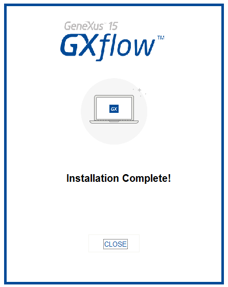

Download the setup from the following link: This setup contains the license manager and the Business Process Diagram Deployer. Guideline1) Execute Setup.exe file at production server. 2) Choose the target path for the application and click "Install" to initialize the process. 3) Once the application is installed, close the dialog.  NotesThe installation starts will see the installation of the Microsoft Visual C++ Redistributable Package because it is necessary for the licenses to work properly.
|
| Backlinks |
| Business Process Deployer |
| HowTo: Deploying a Workflow-based Application |